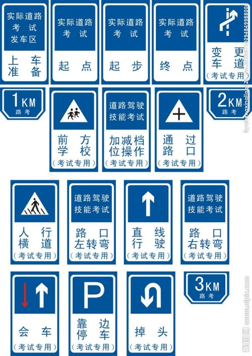

科目三考试规则及流程(路安全驾驶考试)
考试要求
1.上车准备
考生须按安全员指示，靠近车身，（自左前车门向后）绕车一周，确认安全后打开车门上车。上车后听到语音提示“请学员做好考试准备，并进行指纹验证”，首先调整座椅至合适自己的位置，调整内、外后视镜，系好安全带。然后进行指纹验证。指纹仪位于方向盘左侧空调出风口下方。
2.夜间行驶：
指纹验证成功后，白天考试学员在起步前，考生听到语音提示“下面开始模拟夜间灯光使用，请按照语音提示进行操作”后，考生应开始灯光操作。夜间行驶灯光模拟考试将从以下项目中随机抽取三项进行考试。
主要包括：
你将要在路口处转弯，请使用正确灯光（使用近光灯）
你正在低能见度道路上行驶，请使用正确灯光（开启远光灯）
你将要通过急弯，请使用正确灯光（交替使用远近光灯不少于2次）
你将要通过坡路，请使用正确灯光（交替使用远近光灯不少于2次）
你将要通过拱桥，请使用正确灯光（交替使用远近光灯不少于2次）
你将要通过人行横道，请使用正确灯光 （ 交替使用远近光灯不少于2次）
你将要通过没有交通信号灯控制的路口，请使用正确灯光（交替使用远近光灯不少于2次）
你将要超车，请使用正确灯光（先开启左转向灯，然后交替使用远近光灯不少于2次，再开启右转向灯）
你将要与其它车辆会车，请使用正确灯光（开启近光灯）
灯光模拟完毕后，考生需将灯光关闭，再进行下一项考试
抽取到夜间考试的学员应按照夜间考试实际路况进行驾驶。
3.起步
当听到语音提示“请起步”后，踩离合器，将档位挂入一档，打左转向灯（大于3秒），同时（左扭头）观察左后视镜，确认安全后，鸣笛，放驻车制动器，平稳起步，拨正转向灯。在坡路起步时禁止后溜。
4.路口右转弯 当听到语音提示“前方路口右转弯”后，开右转向灯（大于3秒）后，按导向箭头车道右转至行车道。

5.掉头 当听到语音提示“前方请掉头”后，考生应打左转向灯（大于3秒），通过（左）后视镜观察左后方交通情况，确认安全后，方可降低车速，换入低档，驶入掉头区域。驶入掉头区域时应左右观察路况，确认安全后驶入新车道正常行驶并关闭左转向灯。
6.直行通过路口 当听到语音提示“前方通过路口”后，考生应减速慢行（刹车），观察道路交通情况，按照信号灯指示行驶，通过路口时，车速应低于30km/h。路口内禁止停车。
7.路口左转弯 当听到语音提示“前方路口左转弯”后，开左转向灯（大于3秒）后，按导向箭头车道左转至行车道。
8.通过公交车站 当听到语音提示“通过公交车站”，考生应减速慢行（刹车）或在进入该区域前车速低于30km/h，左右（扭头）观察，注意避让公交车辆及行人，确认安全后方可通过。
9.加减挡操作 当听到语音提示“请完成加减档动作”后，考生应该将档位调整至2档，从2档依次升至5档，在5档位时时速需超过40km/h，再将档位依次降至2档。
10.会车 当听到语音提示“前方会车”后，考生须注意前方来车，靠行车道右侧行驶至会车项目结束。注意避让其他车辆，不能压非机动车道线。
11.超车 当听到语音提示“请完成超车动作”后，考生应打左转向灯（大于3秒），同时通过（左）后视镜观察左后方交通情况，确认安全后方可向左转动方向盘，驶入左侧车道进行超车。超过被超车辆，确认与被超车辆保持安全距离后，打右转向灯（大于3秒），同时通过（右）后视镜观察右后方，确认安全后驶入原车道正常行驶。当不具备超车条件时，可等待条件允许时，完成超车动作，禁止右侧超车。
12.直线行驶 当听到语音提示“请保持直线行驶”后，考生应目视前方，双手控制好方向盘，保持车辆直线行驶。严禁骑压道路分界线。
13.变更车道 当听到语音提示“请变更车道”后，考生应打（左）转向灯（大于3秒），同时（左扭头）通过（左）后视镜观察后方交通情况，确认安全后，向（左）转动方向盘变更车道。当不具备变更条件时，考生应减速慢行，等待条件允许后进行变更车道。严禁连续变更两条车道。
14.通过人行横道 当听到语音提示“前方通过人行横道”后，考生应减速慢行（刹车）或在进入该区域前车速低于30km/h。若有行人通过，请把车辆停在安全线外等候，在行人通过人行横道后方可通过。
15.通过学校区域 当听到语音提示“前方通过学校”后，考生应减速慢行（刹车），或在进入该区域前车速低于30km/h，左右（扭头）观察，注意避让学生，确认安全后方可通过。
16.靠边停车 当听到语音提示“请靠边停车”后，考生打右转向灯（大于3秒），同时通过（右）后视镜观察右后方交通情况，确认安全后，将车辆（右侧）平行停放在小于路沿石（或者道路边缘实线）30厘米以内处，但不能压到路沿石（或者道路边缘实线），停稳车辆，拉起驻车制动器，摘空档。